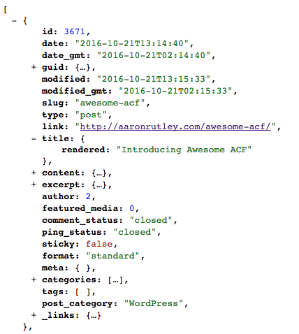

Tonights talk:
Introduce the REST API and explain some practical ways you could get started using it in your client projects!

- Alternative way to communicate with the WordPress database
- Content endpoints are coming in WordPress 4.7
The Acronyms
- JSON - JavaScript Object Notation
- REST - Representational State Transfer
- API - Application Programming Interface
What is an endpoint ?
http://aaronrutley.com/wp-json/wp/v2/posts/
Default Endpoints
- Media:
- Settings:
Excluded from the API by default
- Custom Post Types
- Custom Meta
Custom Endpoints
http://aaronrutley.com/wp-json/my-endpoint/